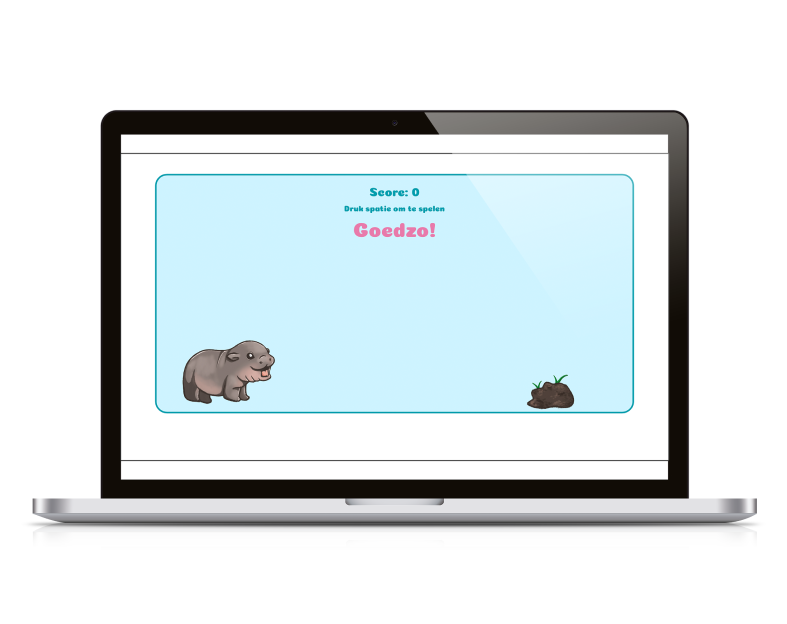
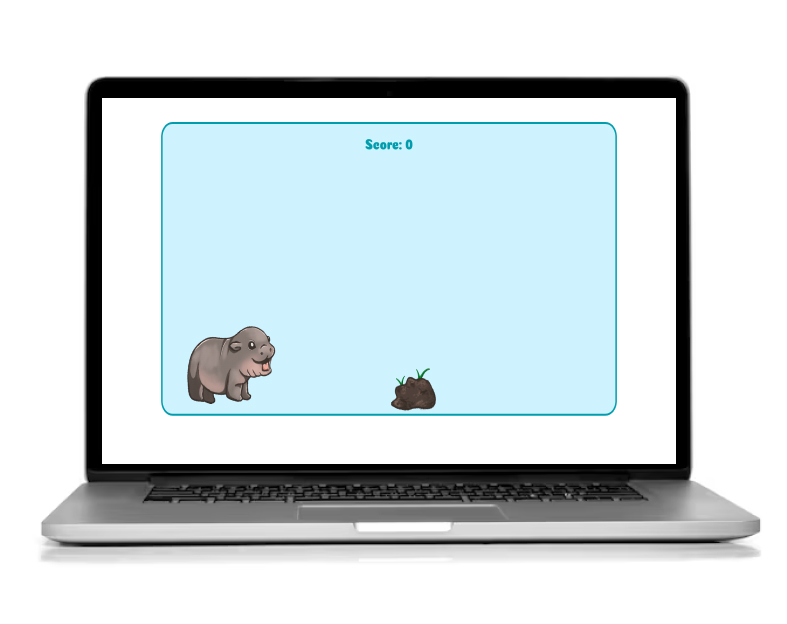
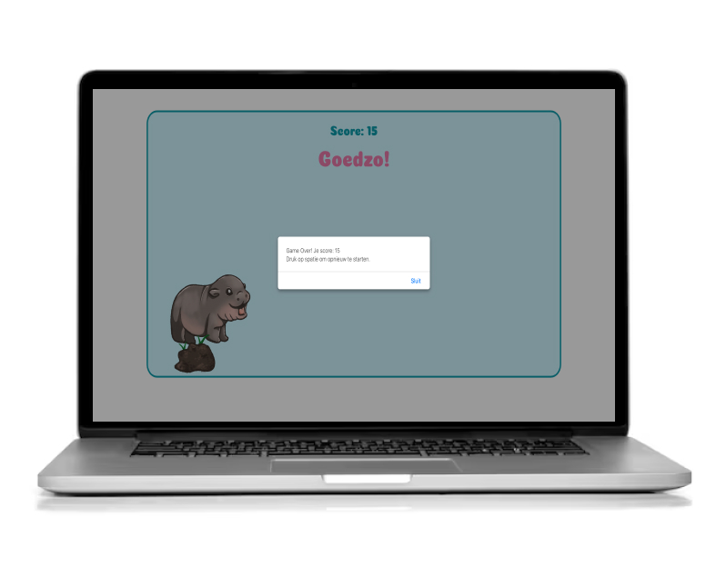

Hoppo – JavaScript Game
Game Development (HTML, CSS & JavaScript)
Play the game ↗About this project
For the Introduction to Programming course, I created my first-ever JavaScript game. The assignment was to design and build a simple browser-based game using HTML, CSS and JavaScript.
I decided to make Hoppo, a hippo that jumps over obstacles inspired by the classic Google Chrome dinosaur game. It was my first time using JavaScript, so I learned a lot about basic game logic, event handling, animations and collision detection.
Building Hoppo helped me understand how JavaScript interacts with the DOM, how timing functions work, and how to create interactive, dynamic elements on a web page.
Preview

